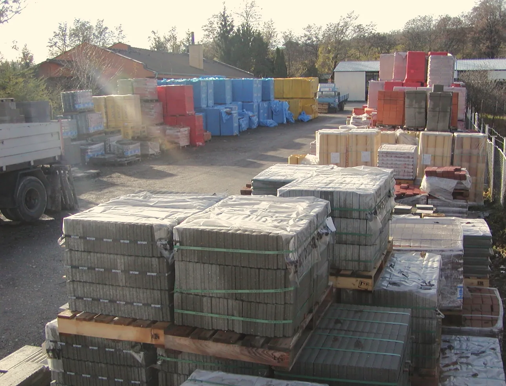

Kontakt
Predajňa a sklad v Nitre – Horných Krškanoch
Príďte do predajne na Novozámockej 62/68, poradíme vám s výberom materiálu a cenovú ponuku pripravíme zadarmo.

Predajňa a sklad
Ing. Mário Richtárik - StavebninyNovozámocká 62/68
949 05 Nitra, Horné KrškanyNavigovať do predajne
Otváracie hodiny
| Pondelok – piatok | 7:00 – 16:00 |
| Sobota | 7:00 – 12:00 |
Firemné údaje a platba
IČO 45959846DIČ SK1083167855
Platba kartou (terminál VÚB banky)
Nákup na splátky (Quatro)

Predajňa
Prezrite si predajňu
Prejdite sa predajňou na fotkách: od tabule pri ceste cez sklad až k pultu.


Odkaz na stavebnú firmu z Nitry: Stavebná firma FIZO SK – www.fizosk.sk.